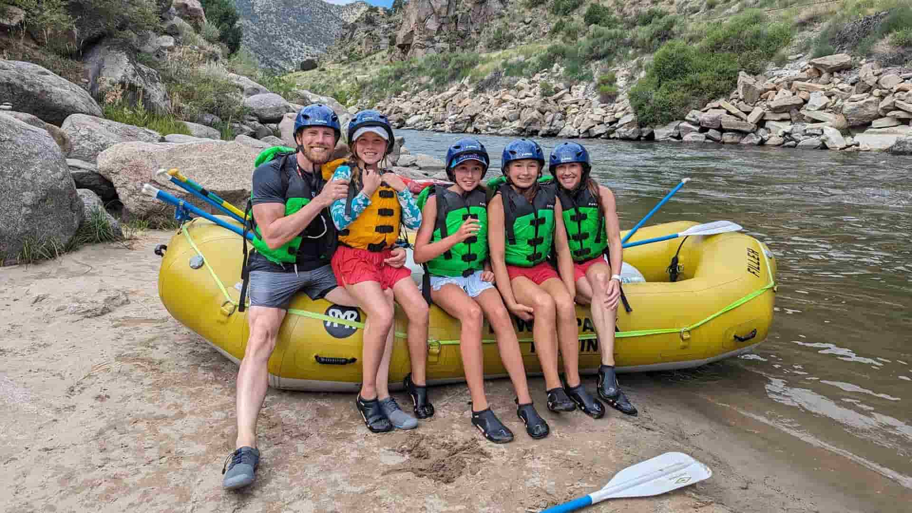

Our Mission
Our mission at White Water Rafting is to deliver unforgettable adventures, connecting people with nature while promoting safety, camaraderie, and environmental care

Our mission at White Water Rafting is to deliver unforgettable adventures, connecting people with nature while promoting safety, camaraderie, and environmental care
Founded in 2025 by Precious Onotu, White Water Rafting was born from a passion for adventure and nature’s untamed beauty and love from the outside world.
Starting with a single raft, it quickly grew into a renowned company known for thrilling experiences, and a commitment to safety. Today, it stands as a symbol of exploration.